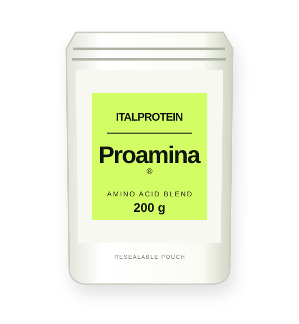
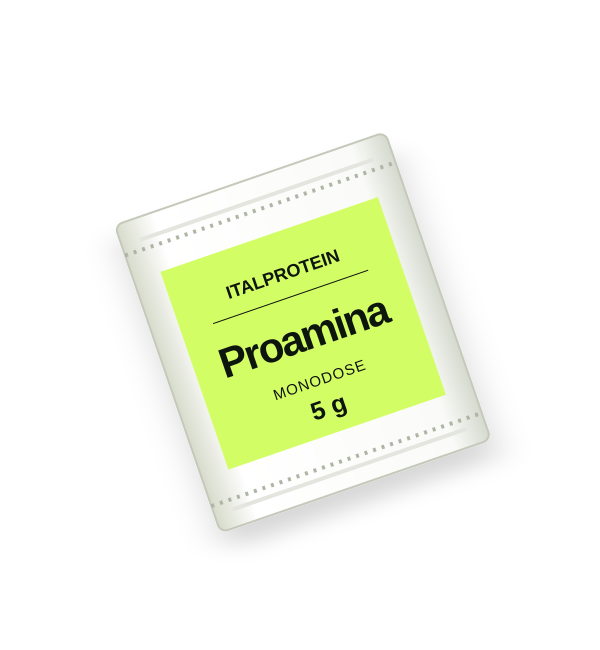

01 / 03 From Italprotein materials · illustrative packaging
From Italprotein materials · illustrative packaging
From Italprotein materials · illustrative packaging1 kg jar
A generous format for recipe trials, culinary development and professional applications.
1 kg · JarPrice on request
PROAMINA® / BY ITALPROTEIN
Proamina® is a food ingredient made from glycine and L-serine, designed to explore reduced-sugar recipes and new taste possibilities. Discover three formats.
Pricing and availability on request · No online paymentsDEVELOPED IN ITALY · PATENTED TECHNOLOGYFrom everyday experiments to professional applications. Three different ways to discover Proamina®.
From Italprotein materials · illustrative packagingA generous format for recipe trials, culinary development and professional applications.

Illustrative mockup · final pack to be confirmedCompact and easy to reseal. Made for exploring your first formulations.

Illustrative mockup · final pack to be confirmedA convenient individual sachet concept, also suited to café and Ho.Re.Ca. settings.
Formats subject to availability and commercial confirmation. Product visuals may show illustrative packaging.
Proamina® is a food ingredient made from glycine and L-serine. Its contribution to sweetness and flavor depends on application and pH. Every recipe has its own balance.
Discover the formula ↗Versatile by nature. A new perspective on formulating taste.
An ingredient to explore in recipes where sugar reduction is being evaluated.
A powdered blend that dissolves easily across different food matrices.
From beverages to bakery and professional applications, with dosage validated case by case.
There is no universal dosage. Sensory performance varies with pH and the other ingredients in a recipe.
Try a small amount and assess the finished recipe.
Perceived sweetness changes with pH. Compare different trials.
For professional use, request the technical data sheet and formulation advice.
It is a food-grade amino-acid blend consisting primarily of glycine and L-serine, developed by NH2 Tech and distributed by Italprotein.
You can select products and quantities and send an email enquiry. Online payments will be available only after a secure payment solution, confirmed pricing and terms are implemented.
Dosage depends on the application, pH and formulation goals. Start with small trials and request technical guidance for professional applications.
Availability of jars, pouches and sachets must be confirmed by Italprotein before an order can be accepted.
No. 5 g is the amount in the sachet, not a universal recommended dose. Usage depends on the application and recipe.
From bench trials to Ho.Re.Ca. and industrial applications. Contact Italprotein about samples, volumes and technical information.